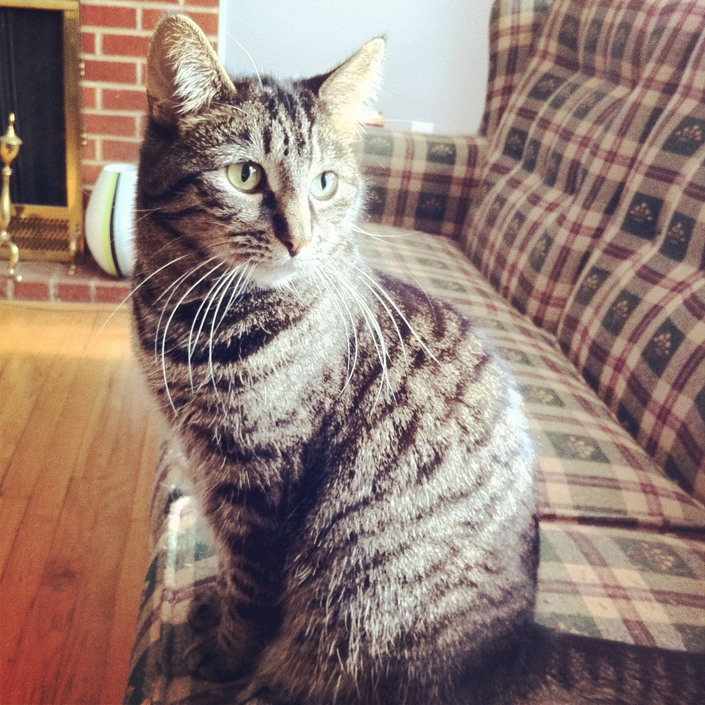
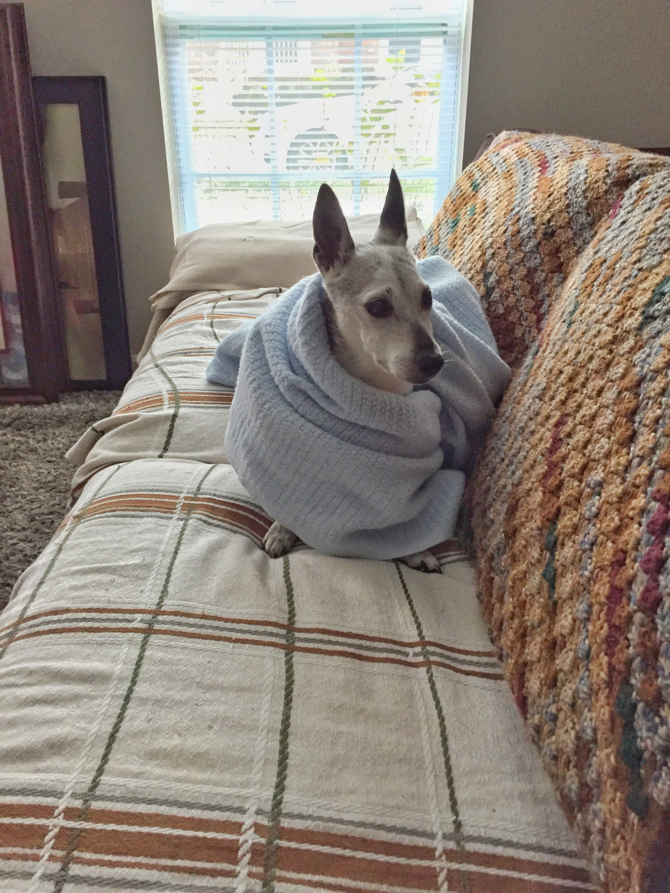

Our pets
About our pets
Clyde

Clyde is actually no longer with us. He died of heart disease in June, 2017.
* I always say he was a special needs cat as he constantly followed me around, wanting my attention.
* Clyde wasn't afraid of anything...except ceiling fans. He did not like them at all.
* His favorite place to be was on my lap.
Sammy

Sammy is also no longer with us. He died in March 2018.
* My wife rescued Sammy when she lived in Florida and had him for 16 years.
* He loved to burrow himself in blankets. It was very interesting watching his process of doing that.
* We used to take him to the local parks quite often and walk a few miles each time.
Bonnie


Bonnie is actually Clyde's twin sister and she is still with us. She is currently 11 years old.
* She stayed out of the limelight while we had Clyde and Sammy. Now that they are gone, she is out and about and loving it!
* She spends most of her day moving throughout the house in order to find the sunlight.
* She likes to sploot (laying down with her legs extending behind her). Never knew what that was called until recently.
Please consider the human society for your next pet